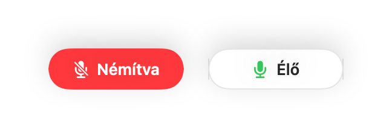
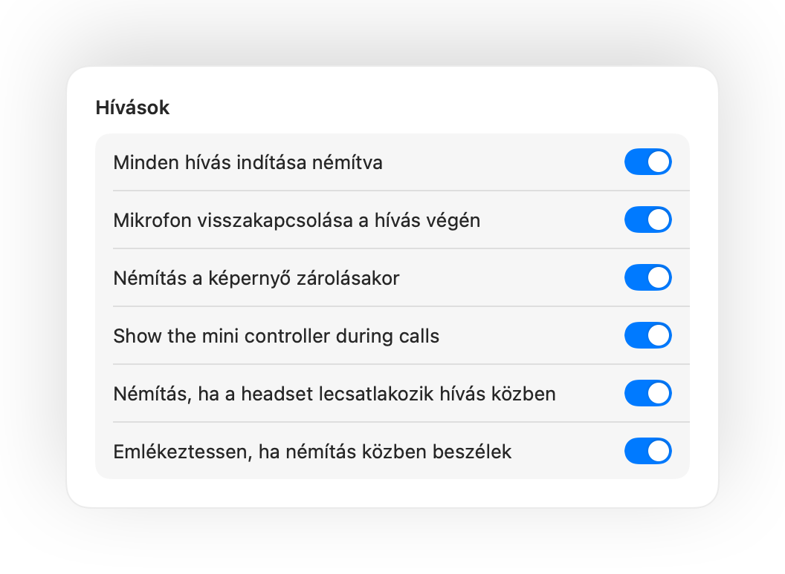
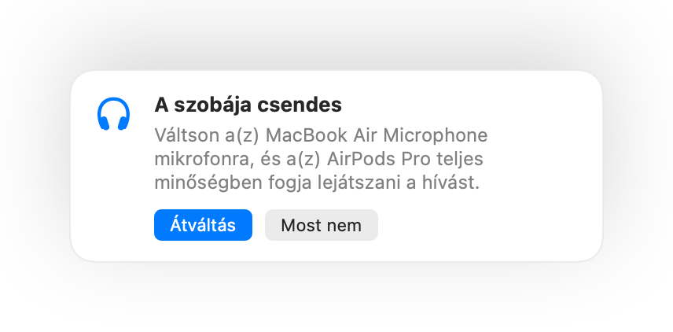

Némítsa el a Mac mikrofonját bárhonnan.
Nyomja meg az AirPodsot vagy egyetlen billentyűparancsot. A Muffle magát a mikrofont kapcsolja ki, így a Google Meet, a Zoom, a Teams, a Slack és az összes többi alkalmazás csak csendet hall.
3 napig ingyenes. Utána egyszeri fizetés, nincs előfizetés. macOS 14 Sonoma és újabb rendszerekhez.

Minden alkalmazással működik, amely használja a mikrofont
- Google Meet
- Zoom
- Microsoft Teams
- Slack
- Discord
- FaceTime
- Webex
- Skype
- SoWork
- Gather
- Chrome
- Safari
- Arc
- Edge
- Firefox
A Muffle hardverszinten némítja a mikrofont, így mindegy, melyik app, böngésző vagy lap használja éppen.
Minden, amire a Macnek szüksége van egy hívás közben
Nyomja meg az AirPodsot a némításhoz
Hívás közben nyomja meg egyszer a szárat a némításhoz, majd újra a visszakapcsoláshoz. Még a Chrome-ban is működik, ahol a Google Meet és más webes hívások figyelmen kívül hagyják az AirPods megnyomását.
Egyetlen billentyűparancs minden apphoz
A Control-Option-M billentyűkombináció mindenhol némít, még akkor is, ha a hívás egy háttérben futó lapon van. Tartsa lenyomva a beszédhez, és engedje el az újbóli némításhoz.
„Némítva van” emlékeztető
Ha némítás közben kezd el beszélni, a Muffle azonnal figyelmezteti, még mielőtt a semminek mondaná el a gondolatait.
Hívások robotpilótán
Indítson minden hívást némítva, kapcsolja vissza a mikrofont a hívás végén, és némítson automatikusan, amikor zárolja a Mac képernyőjét.
Mindig tudhatja, hogy hallható-e
Egy kis lebegő gomb mutatja a mikrofon állapotát a hívások során. Kattintson rá a némításhoz vagy a visszakapcsoláshoz.
A mikrofonszint nem állítódik el
A Chrome, a Zoom és a Teams maguktól módosítják a mikrofonszintet. Rögzítse az értéket, és a Muffle azonnal visszaállítja.
Biztonság, ha lemerül az AirPods
Ha a headset hívás közben lekapcsolódik, a Muffle még azelőtt némít, hogy a hívás átváltana a Mac mikrofonjára és beengedné a szoba teljes zaját.
Parancsikonok és Vezérlőközpont
Némítson a Parancsikonok alkalmazásból, a Siri segítségével, Stream Deckről, Raycastből vagy a Vezérlőközpont egyetlen gombjával.
Gombnyomásra beszéd vagy gombnyomásra némítás
Válassza ki a billentyűparancs működését: érintse meg az átváltáshoz, tartsa lenyomva a beszédhez, vagy köhögéshez némítsa el lenyomva tartva. Adjon meg külön billentyűt a némításhoz és a visszakapcsoláshoz, vagy tartson lenyomva egyetlen billentyűt, például a Jobb Optiont vagy egy extra egérgombot.
Újranémítás, ha elcsendesedik
Csak egyetlen mondatra kapcsolta vissza a mikrofont? Ha a megadott ideig csendben marad, a Muffle automatikusan újra elnémítja.
A szobához legmegfelelőbb mikrofon
Csendes szobában az AirPods használatakor a Muffle a Mac mikrofonját javasolja, így az AirPods teljes minőségben játssza le a hívást. Ha zajos lesz a környezet, visszajavasolja az AirPods mikrofonját.
Lehetetlen eltéveszteni
Zöld vagy piros fény a képernyő szélein, színes menüsorikon, hangjelzés és lebegő gomb. Kapcsolja be azokat, amelyeket szeretne.




Beállítás egy perc alatt
- Telepítse a Muffle appot a Mac App Store-ból, és engedélyezze a mikrofonhozzáférést.
- Csatlakozzon egy híváshoz bármelyik alkalmazásban, a megszokott módon.
- A némításhoz nyomja meg az AirPodsot, nyomja le a Control-Option-M billentyűket, vagy kattintson a menüsor ikonjára.
Alapértelmezetten privát
A Muffle soha nem rögzít, nem tárol és nem küld hangot. Kizárólag be- és kikapcsolja a mikrofont, valamint leolvassa a hangerőt. Nincsenek fiókok, nincs analitika és nincs nyomkövetés.
Gyakori kérdések
Működik a Muffle a Google Meettel a Chrome-ban?
Igen. A Chrome nem adja át az AirPods némítási parancsát a webes hívásoknak, ezért a Muffle fogadja a jelzést, és magát a mikrofont némítja le. Ugyanez igaz minden böngészőlapon futó hívásra.
Mások látni fogják, hogy némítva vagyok?
A hívásalkalmazás továbbra is mutathatja a mikrofont bekapcsolva, mivel a Muffle magát a mikrofont kapcsolja ki, nem az app gombját. A többiek így is csendet hallanak. A Muffle ikonja a menüsorban pirosra vált, amíg némítva van.
Melyik AirPods modellekkel működik?
Az AirPods Pro, az AirPods 3 és újabb típusokkal, valamint az AirPods Max modellel, továbbá a hívásvezérlést támogató Beats eszközökkel. A billentyűparancs és a menüsor bármilyen mikrofonnal működik.
Működik Zoom, Teams, Slack és Discord alatt?
Igen. A Muffle minden olyan alkalmazással működik a Macen, amely mikrofont használ, legyen szó asztali alkalmazásról vagy böngészős hívásról.
Van előfizetési díj?
Nincs. Próbáljon ki minden funkciót ingyenesen 3 napig, majd oldja fel a Muffle-t egyetlen egyszeri vásárlással.
Miért van szüksége a Muffle-nek mikrofonhozzáférésre?
A macOS csak azoknak az alkalmazásoknak továbbítja az AirPods megnyomását, amelyek használják a mikrofont, így a Muffle hívások közben nyitva tart egy néma kapcsolatot. Semmit nem rögzít.
Mi történik, ha kilépek a Muffle-ből, miközben némítva vagyok?
A Muffle kilépéskor automatikusan visszakapcsolja a mikrofont, így soha nem marad némítva a rendszer.
Melyik macOS verziók támogatottak?
A macOS 14 Sonoma és újabb verziók. A Vezérlőközpont gombhoz macOS 26 vagy újabb verzió szükséges.
Van a Muffle-ben gombnyomásra beszéd funkció?
Igen. Válassza a Beállításokban a „Gombnyomásra beszéd” lehetőséget, és tartsa lenyomva a billentyűparancsot a beszédhez. Egyetlen billentyűt is lenyomva tarthat, például a Jobb Optiont vagy az fn billentyűt, illetve egy extra egérgombot.
Miért szól rosszabbul az AirPods hívások közben?
Amikor egy hívás az AirPods mikrofonját használja, az AirPods hívás módra vált, amely gyengébb minőségben játssza le a hangot. Csendes szobában a Muffle inkább a Mac mikrofonját javasolja, így az AirPods teljes minőségben szólal meg.
Útmutatók
- A Google Meet némítása AirPods segítségével MacenAz AirPods megnyomása Macen nem némítja a Google Meet hívást Chrome-ban. Így némíthatja a Meetet AirPods, billentyűparancs vagy a menüsor segítségével.
- A Zoom némítása AirPods vagy billentyűparancs segítségével MacenNémítsa a Zoomot a Macen AirPods-megnyomással vagy globális billentyűparanccsal, akár a háttérből is. Működik az alkalmazásban és a böngészőben is.
- A Microsoft Teams némítása AirPods segítségével MacenNémítsa a Microsoft Teams hívásait Macen AirPods, globális billentyűparancs vagy a menüsor segítségével. Működik az alkalmazásban és a böngészőben is.
- Slack huddle némítása bármelyik alkalmazásból MacenNémítsa a Slack huddle beszélgetéseket Macen bármelyik alkalmazásból egy globális billentyűparanccsal vagy AirPodsszal. Nem kell keresgélni az ablakot.
- Gombnyomásos beszéd és globális némítási billentyűparancs Discordhoz MacenHasználjon egyetlen billentyűparancsot a Discord némításához és a beszédhez Macen, vagy némítson az AirPodsszal. Alkalmazásban és böngészőben is működik.
- Hogyan némítható a Webex bármelyik alkalmazásból MacenNémítsa el a Webex-értekezleteket a Macen egyetlen billentyűparanccsal vagy az AirPodsszal, még akkor is, ha nem a Webex az aktív ablak.
Rövid, gyakorlati válaszok a Mac mikrofonjának némításához, minden alkalmazásban.
Ne keresse többé a némítás gombot.
A Muffle 3 napig ingyenesen kipróbálható.
Hamarosan a Mac App Store-ban